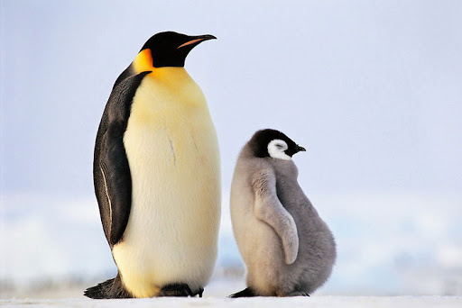

Самцы императорского пингвина достигают роста 130 см и весят в среднем 35—40 кг, но максимально вес самца может достигать 50 кг. Самки достигают 114 см роста и 32 кг веса. Это самый крупный из современных пингвинов. Мускульная масса императорского пингвина также самая большая из всех видов птиц (в основном за счёт грудных мускулов). Оперение императорского пингвина на спине чёрное, а на груди белое, что делает его в воде менее заметным для врагов. Под шеей и на щеках у них жёлто-оранжевая окраска. Птенцы покрыты белым или серовато-белым пухом.
Императорский пингвин из всех видов пингвинов заходит далее всего на юг. Около 300 тысяч особей императорского пингвина живут на льдинах вокруг Антарктиды, но для спаривания и высиживания яиц мигрируют на материк.
До 2009 года считалось, что всего в мире существует 34 их колонии. В результате изучения спутниковых изображений Антарктики (LandSat Image Mosaic of Antarctica) учёными было обнаружено 38 следов помёта на снегу, что соответствует 38 местам зимовки, то есть такому же количеству колоний.
Как морская птица императорский пингвин охотится исключительно в океане. Он питается рыбой, кальмарами и крилем. Императорские пингвины охотятся в группах. Эти группы плывут прямо в косяк рыбы и быстро в нём нападают на добычу, клюя всё, что перед ними возникает. Мелкую добычу они едят прямо в воде, а с более крупной добычей они должны выплыть на поверхность, чтобы её разделать. Охотясь, императорские пингвины преодолевают большие расстояния, двигаясь со скоростью 3—6 км/ч и опускаясь на глубину в сотни метров. Рекордная зафиксированная глубина составила 564 м, а продолжалось это погружение 21,8 минуты (впрочем, на глубину >200 м пингвины ныряют лишь в 5 % случаев, а >400 м — лишь в 0,2 %). Чем больше света, тем глубже они ныряют, так как их главным ориентиром при охоте является зрение, а не слух или эхолот.
Колонии императорских пингвинов находятся в естественных укрытиях: за утёсами и крупными льдинами с обязательным наличием участков открытой
воды. Самые большие колонии насчитывают до десяти тысяч особей. Часто императорские пингвины передвигаются лёжа на брюхе, работая лапами и
крыльями.
У императорских пингвинов существует немного врагов, и естественный возраст этих птиц может достигать 25 лет. Однако ввиду сложной ситуации,
сложившейся в нашем мире из-за чрезмерного браконьерства и охоты на редких представителей животного мира, наши пингвины сейчас находятся в
большой опасности.
Единственные хищники, убивающие взрослого императорского пингвина в воде или вблизи воды — это косатки и морские леопарды.
На льдинах иногда случается, что птенцы императорского пингвина становятся добычей поморников или гигантского буревестника.
Именно от последнего исходит наибольшая опасность, так как он является причиной гибели до трети птенцов императорского пингвина. Для взрослых
особей эти птицы не представляют опасности.